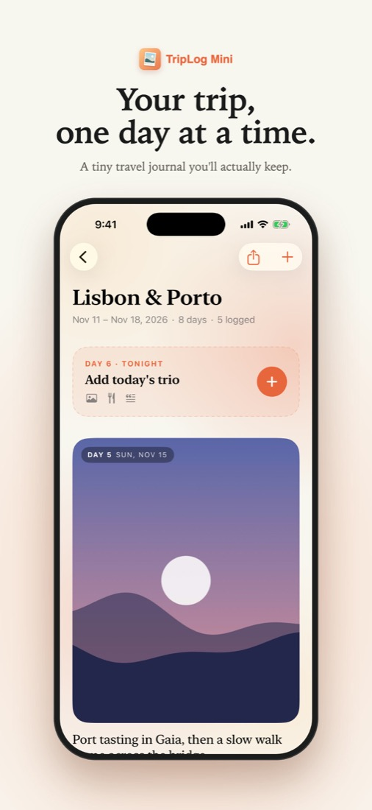
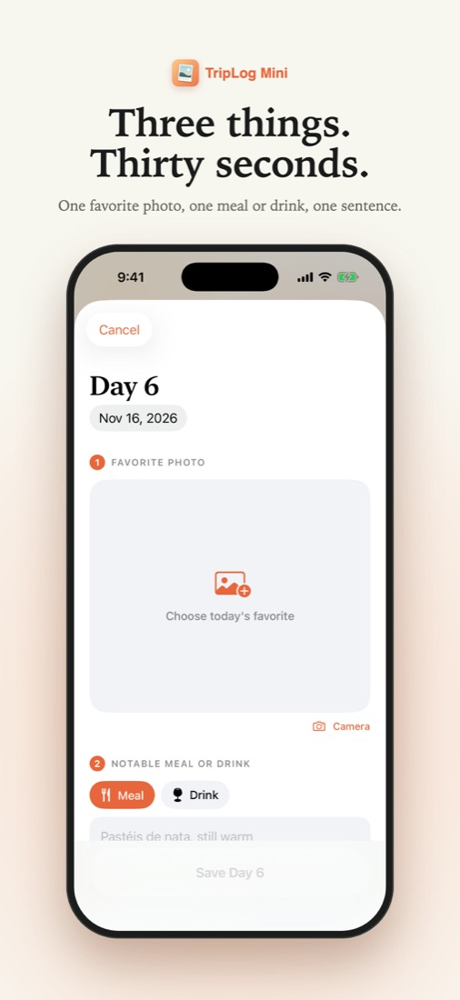
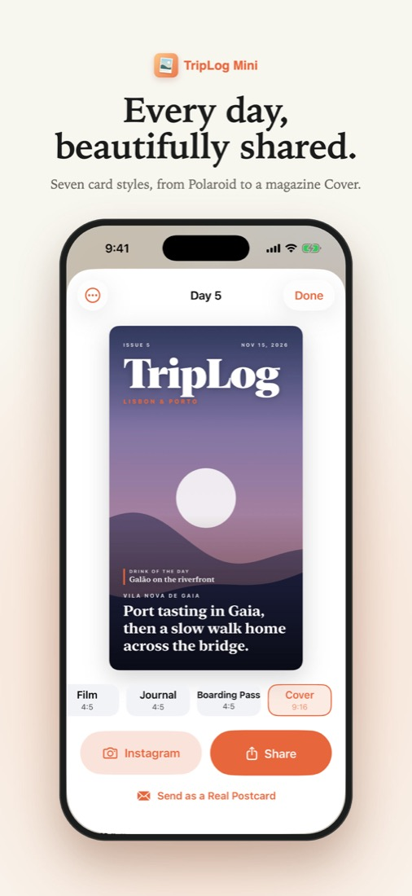
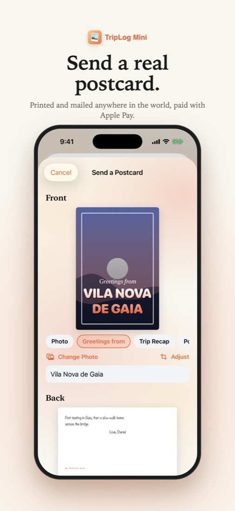
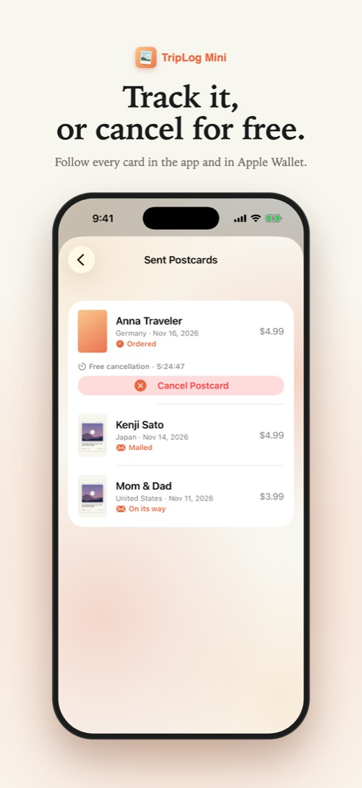
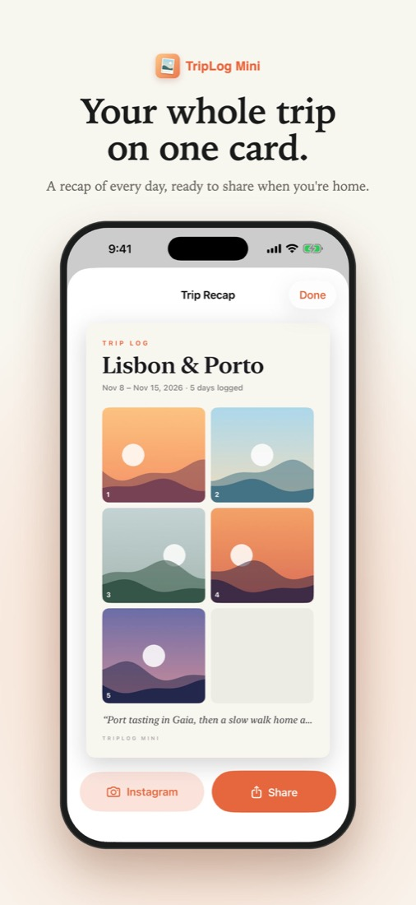

Travel journal for iPhone, iPad and Mac
Your trip,
one day at a time.
One photo. One bite. One sentence. A tiny travel journal you'll actually keep, in 30 seconds a night.
Download on the App StoreFree · iPhone, iPad & Mac · 11 languages






Small on purpose
The Daily Trio
Your favorite photo, one meal or drink, one sentence. Photo suggestions from that day and the city filled in for you.
Ready to share
Every day becomes a card in your style (Story, Polaroid, Noir, Film, Journal, Boarding Pass and more), with your whole photo or cropped to fit. End the trip with a recap card.
Real postcards
Turn any day or photo into a printed postcard, mailed anywhere in the world with postage included. Portrait or landscape, stickers on the back, Apple Pay, tracking in Wallet and by email, and you can cancel within an hour.
A calm timeline
Your trip scrolls like a photo feed, newest day first. Export it all as a clean PDF or Markdown.
iPhone, iPad and Mac
Home and Lock Screen widgets, a Live Activity and Dynamic Island, Siri, Shortcuts and Control Center. On the Mac, scroll by dragging and use keyboard shortcuts.
A gentle nudge
One reminder at night, only on trip days you haven't logged. Reply to it with your sentence, no app needed.
Little delights
Seasonal themes and holiday icons, "one year ago today" memories, and a few easter eggs for the curious.
Private by design
Your journal stays yours.
No ads, no tracking, no analytics and no account required. Without an account, your trips stay on your device; sign in with Apple and they sync only through your own iCloud. The only thing that ever reaches us is a postcard you choose to send. Read the privacy policy.